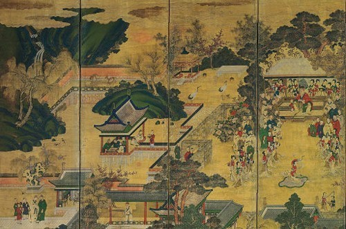
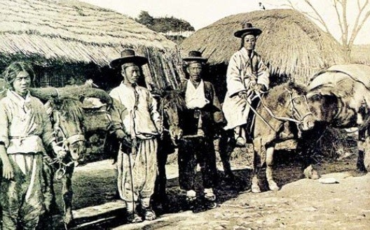
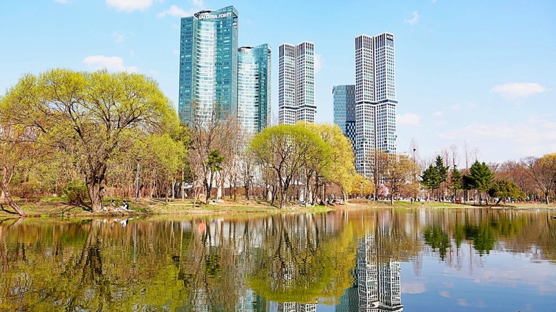
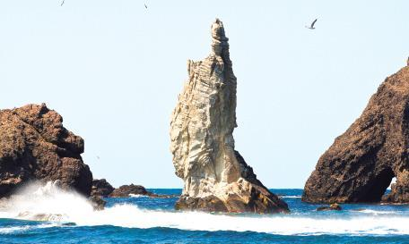

신라가 기원전 57년 가장 먼저 건국되었고, 뒤이어 고구려가 기원전 37년에, 마지막으로 백제가 기원전 18년 건국되었다. 그리고 다른 국가인 가야, 옥저, 동예가 있었지만 금방 멸망했다.
고려 시대

태조 왕건이 삼국을 936년에 통일해서 고려 시대를 만들었고, 왕건이 나라를 세우고, 제34대 왕까지 왕계를 이었다.크게 고려 초기 / 문벌귀족기 / 무신정권기 / 원 간섭기 / 고려 말기로 나누어진다. 각각의 시대마다 지배 계층은 호족 / 문벌 귀족 / 무신 / 권문세족 / 신진 사대부로 나누어진다.
조선 시대

태조 이성계가 1392년 조선을 세웠고, 제25대 왕까지 이어졌다.시기는 관학파 집권기/훈구파 집권기/사화기/권신정치기/붕당정치기/환국정치기/탕평정치기/세도정치기/개화기로 이루어졌고 이후 조선은 멸망하였다.
관광지

서울숲은 서울특별시 성동구 성수동1가에 있는 테마공원이다. 주변에 중랑천, 응봉산, 달맞이공원, 한강(성수대교), 뚝섬유원지 등이 있어 거대한 녹지를 이루고 있다.
경기도 과천시로 이전한 렛츠런파크 서울, 그리고 체육 공원과 골프장 등이 있던 부지를 주거 업무 지역으로 개발하려다[1] 이명박 서울특별시장의 주도로 뉴욕의 센트럴 파크나 런던의 하이드 파크 등을 본따 도심 속의 녹지로 만들었다고 한다. 약 35만 평의 부지에 약 2,352억 원의 사업비를 들여 테마공원 다섯 곳과 기타 시설들을 만들고 2005년 6월에 개장하였다.
롯데월드
총 투자 비용은 6,500억 원이며, 운영은 롯데그룹의 계열사인 호텔롯데의 월드사업부에서 하고 있다. 서울 지하철 2호선 및 8호선 잠실역과 지하통로로 연결되어 있으며, 3번 출구 및 4번 출구를 통해서도 지상으로 접근이 가능하다. 대한민국 최대 규모의 쇼핑몰부터 시작해서 영화관, 테마파크까지 없는게 없는 곳이다.
을릉도(독도)

이 섬은 동해의 바다 가운데에 위치한 화산섬으로, 섬의 중북부에 칼데라인 나리 분지가 있으며, 마지막 화산 폭발은 약 5천 년 전에 있었다.[3] 육지에서 가장 가까운 곳은 직선 거리로 130.3km로 떨어져 있는 경상북도 울진군 죽변면 죽변곶이며, 독도와는 87.4km 떨어져 있다. 뱃길로 포항에서 217km로 3시간 반이 걸리며, 동해시 묵호항에서는 170km로 2시간 50분이 걸린다.
여행 꿀팁
방문하기 좋은 시기: 봄 (3월~5월)과 가을 (9월~11월).
언어: 한국어. 1443년 창제된 훈민정음으로부터 점점 발달해 현재의 한국어가 되었다. 서울이 아닌 다른 지역에서 사투리를 사용할 수 도 있기에, 기본적인 한국어 구문을 배우면 도움이 됩니다.
통화: 한국 원 (WON).
교통: 한국은 기차, 버스, 지하철 등 광범위한 교통망을 자랑합니다. KR 패스는 여러 곳으로 여행를 가는 데에 매우 가격이 저렴하고 유용합니다.
음식: 한국은 다양한 먹거리로 유명합니다. 예를 들어, 삼겹살, 김치, 비빔밥등이 있습니다.